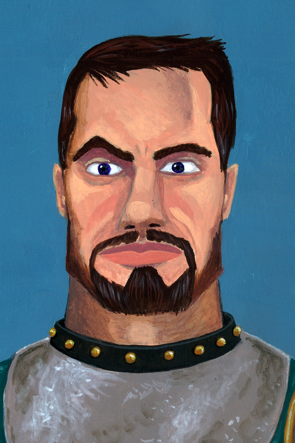

Wei Sunstep
Human (Variant) · Monk 3 · Way of the Open Hand · Outlander · Feat: Mobile
"Speed is not about running away. It is about arriving before they understand the danger."
15
AC
21
HP
50 ft
Speed
+3
Initiative
+2
Prof. Bonus
12
Passive Perc.
3
Ki Points
13
Ki Save DC
AC = Unarmored Defense (10+DEX+WIS). Speed = 30 base + 10 Unarmored Movement + 10 Mobile feat = 50 ft!
12
+1
STR
16
+3
DEX
13
+1
CON
10
+0
INT
15
+2
WIS
8
−1
CHA
Saving Throws
- Strength+3
- Dexterity+5
- Constitution+1
- Intelligence+0
- Wisdom+2
- Charisma−1
Skills
- Acrobatics (DEX)+5
- Athletics (STR)+3
- History (INT)+0
- Insight (WIS)+4
- Perception (WIS)+2
- Stealth (DEX)+3
- Survival (WIS)+4
Attacks
| Attack | To Hit | Damage | Notes |
|---|---|---|---|
| Shortsword | +5 | 1d6+3 piercing | Melee; monk weapon |
| Unarmed Strike | +5 | 1d4+3 bludgeoning | Melee; can use DEX (+3) |
| Dart | +5 | 1d4+3 piercing | Thrown 20/60 ft |
Bonus action unarmed: After attacking with a shortsword or unarmed strike, make one unarmed strike for free as a bonus action (no ki needed).
Equipment
- Shortsword
- 10 darts
- Explorer's pack
- Monk's robes
- Small carved jade token (monastery keepsake)
- 10 gp
Feat: Mobile
Speed +10 ft. When you Dash, difficult terrain doesn't cost extra movement that turn. When you make a melee attack against a creature (hit or miss), it can't make opportunity attacks against you until your next turn.
Ki (3 Points — Recover on Short or Long Rest)
1
2
3
Circle when spent; erase on short/long rest.
Flurry of Blows1 Ki
After you take the Attack action, you can spend 1 ki point to make two unarmed strikes as a bonus action. Combined with a regular attack: 3 hits in one turn.
New player tip: Your primary offensive move. Attack with the shortsword (action), then Flurry of Blows (bonus action) for two more unarmed strikes. That's three attacks, each at +5.
Patient Defense1 Ki
Spend 1 ki to take the Dodge action as a bonus action. Until your next turn, attack rolls against you have disadvantage, and you have advantage on DEX saves. Use this when surrounded and vulnerable.
Step of the Wind1 Ki
Spend 1 ki to take the Dash or Disengage action as a bonus action. Your jump distance also doubles. With Mobile feat, you can move 100 ft in a single turn by dashing.
Open Hand TechniqueWay of the Open Hand
Whenever you hit a creature with a Flurry of Blows attack, you can impose one of the following effects (no save if you choose the reaction option):
• Prone: DEX save DC 13 or knocked prone (disadvantage on attacks, melee attacks against it have advantage).
• Pushed: STR save DC 13 or pushed 15 ft away from you.
• No reactions: The creature can't take reactions until the end of your next turn (prevents opportunity attacks, counterspells, etc.).
• Prone: DEX save DC 13 or knocked prone (disadvantage on attacks, melee attacks against it have advantage).
• Pushed: STR save DC 13 or pushed 15 ft away from you.
• No reactions: The creature can't take reactions until the end of your next turn (prevents opportunity attacks, counterspells, etc.).
New player tip: Use "No reactions" against spellcasters (stops Counterspell) or "Prone" when an ally is standing next to the target (they get advantage on melee attacks against prone creatures).
Deflect Missiles
Reaction: When you are hit by a ranged weapon attack, reduce the damage by 1d10+6. If you reduce the damage to 0, you can spend 1 ki to throw it back (+5 to hit as a ranged attack, range 20/60 ft, dealing the weapon's normal damage + DEX mod).
Unarmored Defense
AC = 10 + DEX mod + WIS mod = 10+3+2 = 15. You cannot wear armour and keep this benefit.
Once Per Long Rest · Character Quirk
Flying Entrance
When you move at least 20 ft in a straight line and then land a melee attack on the same turn, the impact carries extra ki momentum: add 1d6 bludgeoning damage to the hit. If the target is Large or smaller, they must succeed on a DC 13 STR save or be pushed 5 ft in the direction of your movement. This works with or without ki points. It also looks extremely cool, which is not a mechanical benefit but is worth noting.
Personality
Trait
When I set my mind to something, I follow through no matter what stands in the way.
Ideal
Discipline. There is deep strength in self-mastery; chaos only leads to ruin.
Bond
I seek to preserve the teachings of the monastery that trained me, even though the monastery itself is gone.
Flaw
I have little patience for those who don't apply themselves. Mediocrity offends me on a personal level.
Portrait: Joseph Hewitt · CC-BY 4.0